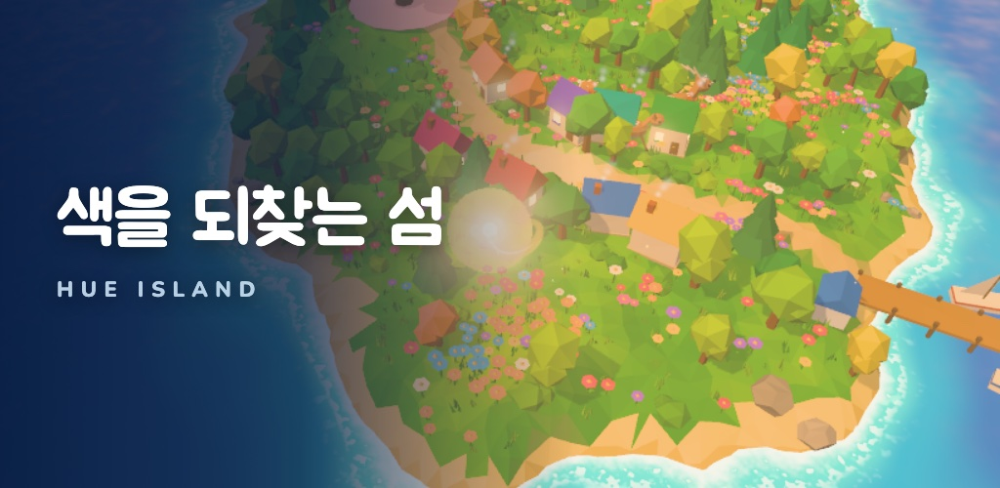

색을 되찾는 섬
작은 정령이 되어, 흑백 세계에 색을 되찾아요
날기만 하면 색이 번지는 3D 힐링 색칠 여행
6개 지역 · 24판 — 섬 · 깊은 바다 · 사막 · 얼어붙은 땅 · 숲 · 달
동물들을 만나며 채우는 도감 169칸
광고 없음 · 오프라인 플레이 · 16개 언어
Google Play (Android)
App Store (iPhone / iPad)